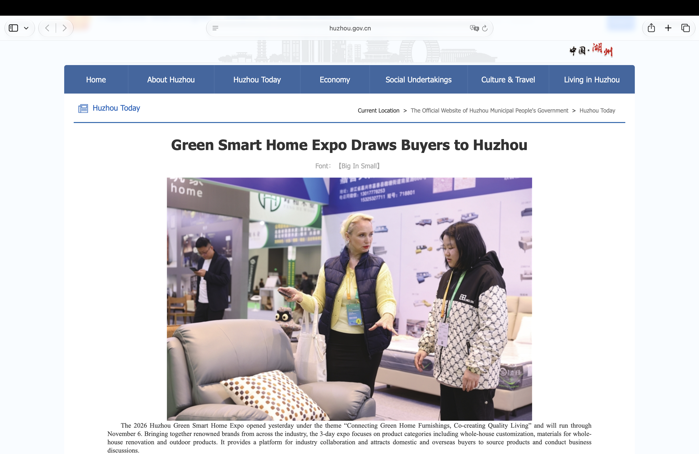

City stories, in English
News Translation Intern · Huzhou Municipal Government · Remote
I translate weekly city news for readers beyond Huzhou: finding the lead, preserving the facts and giving institutional language a clear, human rhythm.
Inside the work
- Cover municipal updates, public affairs, civic life, culture, sport and local development.
- Post-edit AI drafts against Chinese source texts, checking omissions, names, titles, terminology and context.
- Rework headlines, leads and sentence structure for international readers, with accuracy and original emphasis intact.
28 Thursday editions · Apr 30–Nov 5, 2026Source-first editing